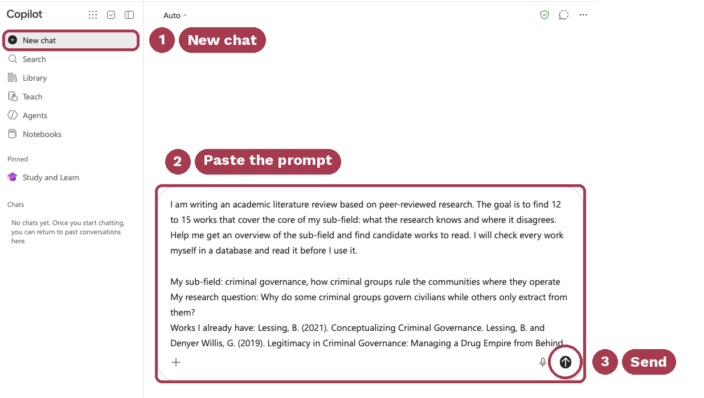
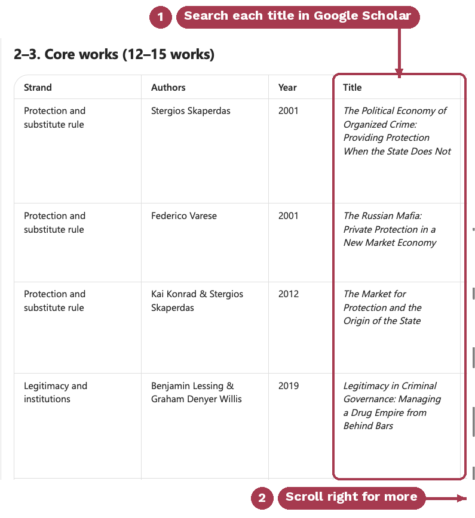
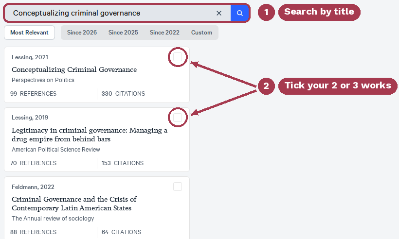
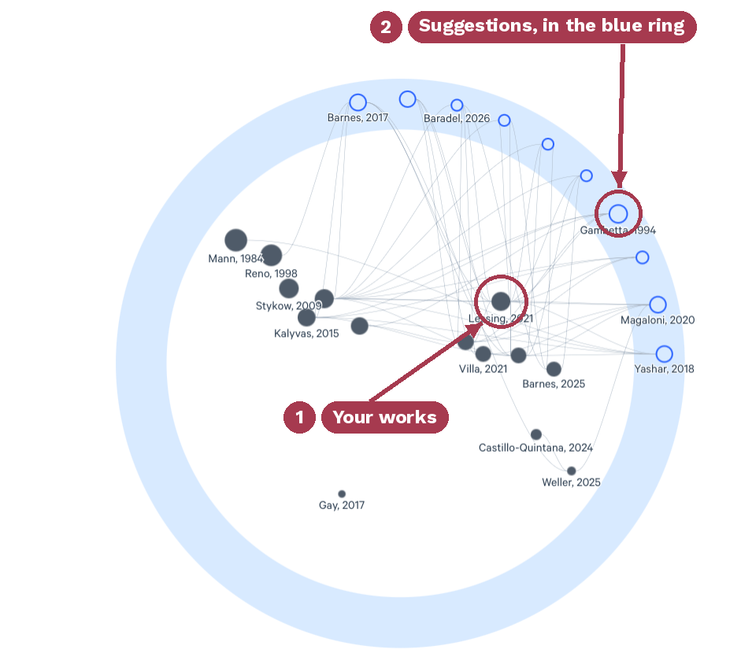
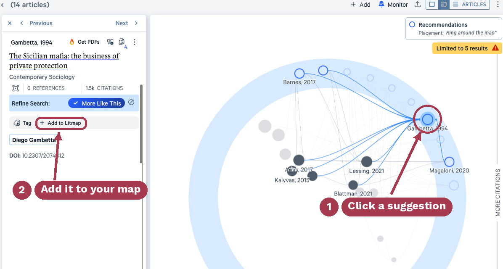
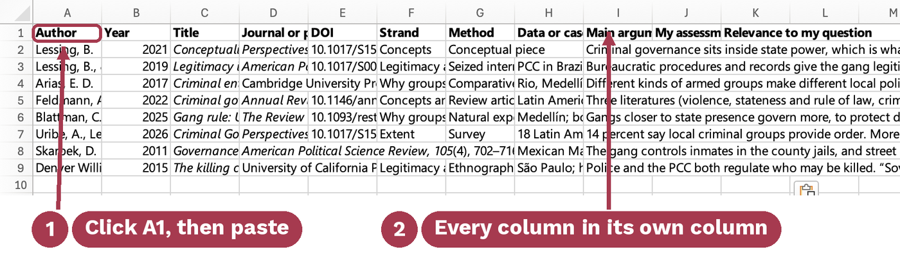

AI for your literature review
Workshop page
AI for your literature review
Four workflows, from the easiest to the most advanced. Work down the page from the top.
AI finds and sorts. You read and judge.
Important: the course’s AI guidelines apply to everything on this page.
1. Ask AI for core works, and check each one
You need: your sub-field and your research question, one sentence each, and 2 or 3 works you already have. Pen and paper are enough to write down the works you check and their “Cited by” numbers.
- Copy prompt A and replace each [bracket] with your own words.
- Paste it into Copilot (log in with your UU student account) or into the chat tool you use.
- Pick the works that look useful for your question. Search each title in Google Scholar: does the work exist as the answer says? Write down its “Cited by” number.
- Drop every work you cannot find. Keep the checked works for your reading list.
Show me how


Prompt A: map the field and find candidate works
I am writing an academic literature review based on peer-reviewed research. The goal is to find 12 to 15 works that cover the core of my sub-field: what the research knows and where it disagrees. Help me get an overview of the sub-field and find candidate works to read. I will check every work myself in a database and read it before I use it.
My sub-field: [your sub-field, in one sentence]
My research question: [your question, in one sentence]
Works I already have: [2 or 3 works: author, year, title]
Please:
1. Name the 3 to 5 main strands or debates in this sub-field, with one or two sentences on each and on where they disagree.
2. For each strand, list its foundational works and its influential recent works (from the last ten years), 12 to 15 works in all.
3. For each work, give the authors, year, title, journal or publisher, the DOI if it has one, its main argument or finding in one sentence, its method and its data or cases, and one line on why it matters for my question.
4. End with search terms for each strand that I can use in Google Scholar.
Rules:
- Only peer-reviewed journal articles and academic books.
- Never invent a reference. If you are not sure a work exists, say so.
- Show the works as one table with the columns: Strand, Authors, Year, Title, Journal or publisher, DOI, Main argument, Method and cases, Why it matters.2. See how the works connect, in Litmaps
You need: a free Litmaps account (sign up with your email or Google), and 2 or 3 works you know or have checked.
- Log in at app.litmaps.com and search for one of your works by its title or DOI.
- Add your 2 or 3 works to one map as seeds, the works the map starts from.
- Look at the map: older works that many others build on, and recent works that cite several of your seeds. Add the ones that sound relevant to your question.
- Check every new work as in workflow 1 before it goes on your reading list.
Show me how



If you keep your references in a reference manager, Litmaps can also import them as a file.
3. Feedback on one paragraph of your own text
You need: one paragraph from your Description of a Research Field, your research question, and the grading criteria from Studium.
- Fill in prompt C with the grading criteria (Studium, Grading criteria), your research question, and your paragraph.
- Run it in UU’s Copilot. UU says what you enter there stays protected and is not used to train the models.
- Read each question and decide which ones you act on. You write the changes yourself.
Your own text only, never a peer’s.
Prompt C: feedback on my own text
I am writing a literature review for a master's course in peace and conflict studies. Below is one paragraph that I wrote myself, and the criteria the course uses to assess it.
Give me feedback as questions and short comments only. Do not rewrite my text, and do not suggest new sentences or wording. I decide what to change, and I write the changes myself.
Look for:
- claims that are unclear, or that no work backs up,
- places where I describe works one by one instead of comparing them,
- perspectives or debates that the paragraph leaves out,
- whether the paragraph serves my research question.
The course criteria: [paste the grading criteria from Studium]
My research question: [your question]
My paragraph: [paste one paragraph of your own text]4. More advanced: your own literature matrix, with AI
Done with workflows 1 to 3? Use AI to turn your own notes into a literature matrix: one row per work, so you can compare the works side by side.
You need: your references and your notes on each work. To see what a finished matrix looks like, open the example matrix.
- Copy prompt B and replace the two [brackets] with your references and your notes.
- Run it in Copilot.
- Select the table in the answer, copy it, and paste it into an empty sheet in Excel or Google Sheets. If everything lands in one column, ask me.
- Sort by Year and filter by Strand to compare the works (Excel: Data, Sort and Data, Filter. Google Sheets: Data, Sort range and Data, Create a filter). Empty cells show what you still need to read for.
- Write My assessment and Relevance to my question yourself.
Show me how

The matrix is your working file. The text and tables in your review you write and build yourself.
Prompt B: from a list to a matrix
Turn my references and notes below into a table for a literature matrix.
Use these columns, in this order: Author, Year, Title, Journal or publisher, DOI, Strand, Method, Data or cases, Main argument (my words), My assessment, Relevance to my question.
Rules:
- Fill Author, Year, Title, Journal or publisher, and DOI from my references, in one consistent style (APA 7), using only what I pasted. Do not look anything up and do not add what is missing.
- Fill Strand, Method, Data or cases, and Main argument only from my notes, in my words. If my notes say nothing, leave the cell empty.
- Leave My assessment and Relevance to my question empty. I write them myself.
- Add no works and no information that is not in what I pasted.
- Show the result as one table, so I can copy it into Excel or Google Sheets.
My references:
[paste your references, for example copied from Google Scholar's "Cite"]
My notes:
[paste your notes, one block per work]Your workflow description
The course asks you to state which AI tools you used and what for, or that you used none. An example:
I used [chat tool] to get an overview of the sub-field and a first list of candidate works, checked each work and its citation count in Google Scholar, and used [map tool] to see how the works connect. I read every work in this review myself. I used [chat tool] to turn my notes into a table and to get questions on one paragraph of my description, and I wrote all changes myself.Change it so it says what you actually did.
AI guidelines
AI may help you find and sort the literature. Reading it, judging it, and writing about it are yours. From the course’s AI guidelines in Studium:
You may not:
- submit or present text, slides, or figures that an AI tool has produced for you, in whole or in part. Checking the spelling and grammar of your own sentences is fine.
- let an AI tool do your analysis. You may use AI tools to search for literature, but deciding which works to include, comparing and critically evaluating them, and identifying the research gap must be your own work. An AI tool may point out weaknesses in your draft, but you decide what to change and you write the changes yourself.
- include a work in your review that you have not read yourself
- use AI tools for your peer feedback, even to check its language, or upload a peer’s draft to an AI tool (see Peer feedback)
You are responsible for everything you submit. In the workflow description of your written assignments, state which AI tools you used and what you used them for, or that you used none. Be prepared to explain your work and your choices orally, in the tutoring sessions or when we ask.
When in doubt, ask before you hand in.
Slides
Questions or corrections: tim.gasste@pcr.uu.se.